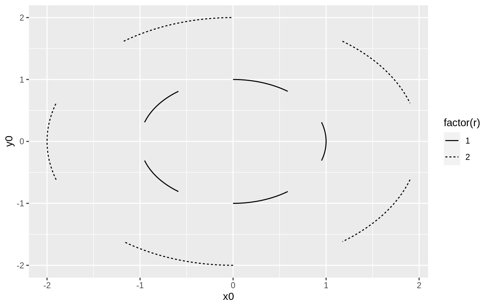
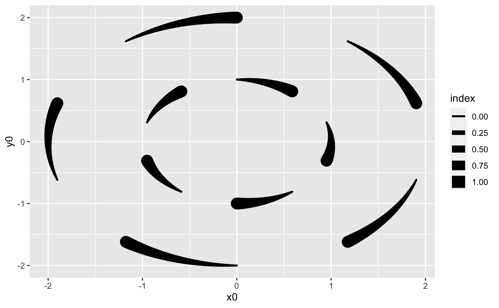
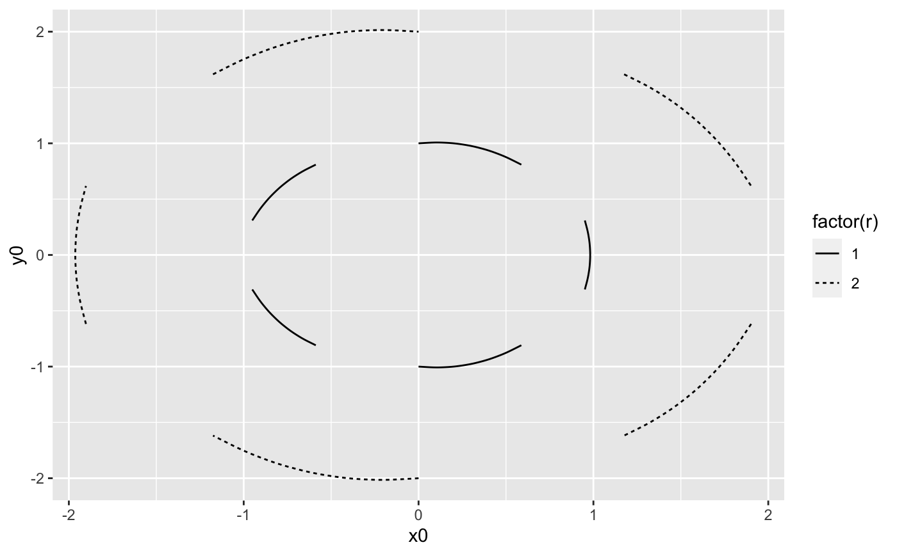
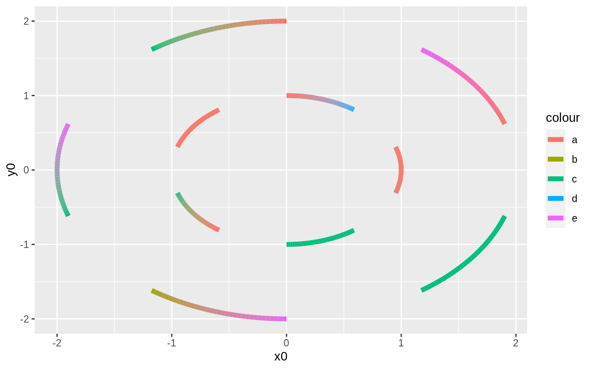

This set of stats and geoms makes it possible to draw circle segments based
on a center point, a radius and a start and end angle (in radians). These
functions are intended for cartesian coordinate systems and makes it possible
to create circular plot types without using the
ggplot2::coord_polar() coordinate system.
stat_arc(
mapping = NULL,
data = NULL,
geom = "arc",
position = "identity",
na.rm = FALSE,
show.legend = NA,
n = 360,
inherit.aes = TRUE,
...
)
geom_arc(
mapping = NULL,
data = NULL,
stat = "arc",
position = "identity",
n = 360,
arrow = NULL,
lineend = "butt",
na.rm = FALSE,
show.legend = NA,
inherit.aes = TRUE,
...
)
stat_arc2(
mapping = NULL,
data = NULL,
geom = "path_interpolate",
position = "identity",
na.rm = FALSE,
show.legend = NA,
n = 360,
inherit.aes = TRUE,
...
)
geom_arc2(
mapping = NULL,
data = NULL,
stat = "arc2",
position = "identity",
n = 360,
arrow = NULL,
lineend = "butt",
na.rm = FALSE,
show.legend = NA,
inherit.aes = TRUE,
...
)
stat_arc0(
mapping = NULL,
data = NULL,
geom = "arc0",
position = "identity",
na.rm = FALSE,
show.legend = NA,
inherit.aes = TRUE,
...
)
geom_arc0(
mapping = NULL,
data = NULL,
stat = "arc0",
position = "identity",
ncp = 5,
arrow = NULL,
lineend = "butt",
na.rm = FALSE,
show.legend = NA,
inherit.aes = TRUE,
...
)Set of aesthetic mappings created by aes() or
aes_(). If specified and inherit.aes = TRUE (the
default), it is combined with the default mapping at the top level of the
plot. You must supply mapping if there is no plot mapping.
The data to be displayed in this layer. There are three options:
If NULL, the default, the data is inherited from the plot
data as specified in the call to ggplot().
A data.frame, or other object, will override the plot
data. All objects will be fortified to produce a data frame. See
fortify() for which variables will be created.
A function will be called with a single argument,
the plot data. The return value must be a data.frame, and
will be used as the layer data. A function can be created
from a formula (e.g. ~ head(.x, 10)).
The geometric object to use display the data
Position adjustment, either as a string, or the result of a call to a position adjustment function.
If FALSE, the default, missing values are removed with
a warning. If TRUE, missing values are silently removed.
logical. Should this layer be included in the legends?
NA, the default, includes if any aesthetics are mapped.
FALSE never includes, and TRUE always includes.
It can also be a named logical vector to finely select the aesthetics to
display.
the smoothness of the arc. Sets the number of points to use if the arc would cover a full circle
If FALSE, overrides the default aesthetics,
rather than combining with them. This is most useful for helper functions
that define both data and aesthetics and shouldn't inherit behaviour from
the default plot specification, e.g. borders().
Other arguments passed on to layer(). These are
often aesthetics, used to set an aesthetic to a fixed value, like
colour = "red" or size = 3. They may also be parameters
to the paired geom/stat.
The statistical transformation to use on the data for this layer, as a string.
Arrow specification, as created by grid::arrow().
Line end style (round, butt, square).
the number of control points used to draw the arc with curveGrob. Determines how well the arc approximates a circle section
An arc is a segment of a line describing a circle. It is the fundamental visual element in donut charts where the length of the segment (and conversely the angular span of the segment) describes the proportion of an entety.
geom_arc understand the following aesthetics (required aesthetics are in bold):
x0
y0
r
start
end
color
size
linetype
alpha
lineend
The start coordinates for the segment
The end coordinates for the segment
The curvature of the curveGrob to match a circle
geom_arc_bar() for drawing arcs with fill
# Lets make some data
arcs <- data.frame(
start = seq(0, 2 * pi, length.out = 11)[-11],
end = seq(0, 2 * pi, length.out = 11)[-1],
r = rep(1:2, 5)
)
# Behold the arcs
ggplot(arcs) +
geom_arc(aes(x0 = 0, y0 = 0, r = r, start = start, end = end,
linetype = factor(r)))

# Use the calculated index to map values to position on the arc
ggplot(arcs) +
geom_arc(aes(x0 = 0, y0 = 0, r = r, start = start, end = end,
size = stat(index)), lineend = 'round') +
scale_radius() # linear size scale

# The 0 version maps directly to curveGrob instead of calculating the points
# itself
ggplot(arcs) +
geom_arc0(aes(x0 = 0, y0 = 0, r = r, start = start, end = end,
linetype = factor(r)))

# The 2 version allows interpolation of aesthetics between the start and end
# points
arcs2 <- data.frame(
angle = c(arcs$start, arcs$end),
r = rep(arcs$r, 2),
group = rep(1:10, 2),
colour = sample(letters[1:5], 20, TRUE)
)
ggplot(arcs2) +
geom_arc2(aes(x0 = 0, y0 = 0, r = r, end = angle, group = group,
colour = colour), size = 2)
